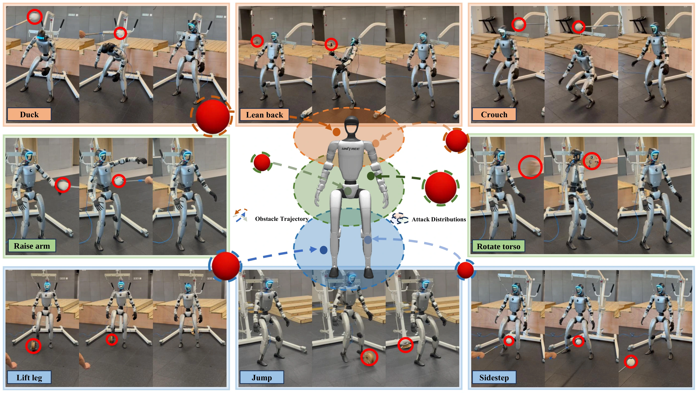
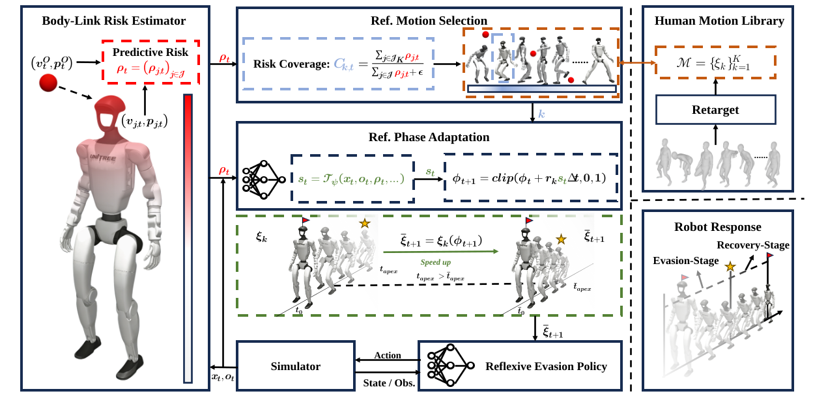

Speed 01Slow
Research project · 2026
BARE: Body-Aware Reflexive Evasion for Humanoid Robots
A human-motion-guided framework for targeted, risk-conditioned evasive responses with whole-body balance and recovery.
Paper PDF
Code soon

Real-time response
01
Adaptive whole-body avoidance under sequential attacks
Overview Robust responses across attack heights, directions, and objects.
01
Abstract
Learning to respond
when every moment
matters.
Dynamic obstacle avoidance is essential for safely deploying humanoid robots in real-world environments, where rapidly approaching objects require immediate evasive responses. Recent advances in reflexive evasion have focused primarily on quadrupeds, which typically rely on large-scale whole-body maneuvers. In contrast, humanoids can exploit their rich body articulation to evade through small, localized body adjustments. By moving threatened body regions without repositioning the entire body, these responses may require less execution time and less surrounding free space. However, local adjustments can alter mass distribution or support conditions, making it challenging to achieve rapid evasion while maintaining whole-body stability. To this end, we propose BARE (Body-Aware Reflexive Evasion), a humanoid reflexive evasion framework guided by human motion priors that enables rapid local evasion while maintaining whole-body stability. A risk-guided motion adapter is designed to select reference motions from a retargeted human evasive motion library based on the threatened body region and to adjust their temporal phases based on collision urgency, allowing the robot to reach evasive postures before potential contact. Conditioned on the adapted reference and link-level collision risk, a reflexive evasion policy learns through reinforcement learning to coordinate local body adjustments with whole-body stabilization. We validate BARE in simulation and real-world experiments, demonstrating its ability to perform targeted local evasion while maintaining whole-body stability.
Humanoid RobotsReflexive EvasionReinforcement Learning
02
Simulation demos
From training to
transfer.
The same avoidance motion evaluated with obstacles moving at three different speeds.
Speed 02Medium
Speed 03Fast
03
Real-robot demos
One robot.
Threats at every level.
Explore responses by attack height, then switch between attack direction and object for each motion.
01
High attack avoidance
Upper-body threats elicit lowering, leaning, and backward evasive motions.
03.B
Moving responses
Dynamic avoidance motions that relocate the robot's support region.
03.C
Combined attacks
Longer sequences combining threats at multiple heights.
Sequence ACrouch · Sidestep
Sequence BLean back · Raise arm · Lift leg
04
Method
Method overview.
Overview of the proposed framework.
